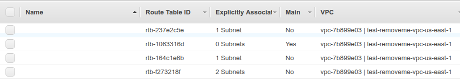

Provisioning solution to amazon ecs, part 1 - network infrastructure¶
Let’s assume we want to deploy our solution to one of the docker friendly platforms available - Amazon ECS.
First step we need is to model and create our network infrastructure.
So initially, we might come with two layer architecture, where we have public web frontend in the public network, and we have our api application instances, usually hidden in the private network.
With ECS role of the public frontend end point will play elastic load balancer.
Let’s describe plan above for AWS VPC with Ansible
vpc_cidr_block: 10.0.0.0/16
vpc_subnets:
- cidr: 10.0.0.0/20
az: "{{aws_region}}{{vpc_availability_zone_t1}}"
resource_tags: {"Name": "{{readable_env_name}}-sb-pub-{{aws_region}}-{{vpc_availability_zone_t1}}", "Environment":"{{readable_env_name}}", "Tier" : "1" }
- cidr: 10.0.16.0/20
az: "{{aws_region}}{{vpc_availability_zone_t2}}"
resource_tags: { "Name": "{{readable_env_name}}-sb-pub-{{aws_region}}-{{vpc_availability_zone_t2}}", "Environment":"{{readable_env_name}}", "Tier" : "1" }
- cidr: 10.0.32.0/20
az: "{{aws_region}}{{vpc_availability_zone_t1}}"
resource_tags: {"Name": "{{readable_env_name}}-sb-priv-{{aws_region}}-{{vpc_availability_zone_t1}}", "Environment":"{{readable_env_name}}", "Tier" : "2" }
- cidr: 10.0.48.0/20
az: "{{aws_region}}{{vpc_availability_zone_t2}}"
resource_tags: { "Name": "{{readable_env_name}}-sb-priv-{{aws_region}}-{{vpc_availability_zone_t2}}", "Environment":"{{readable_env_name}}", "Tier" : "2" }
vpc_internet_gateway: "yes"
vpc_route_tables_public:
- subnets:
- 10.0.0.0/20
- 10.0.16.0/20
routes:
- dest: 0.0.0.0/0
gw: igw
Let us now plan security in our VPC
Bastion: So we anyway need way to troubleshoot the application instances, that’s why we reserve possibility to setup bastion hosts.
Elb: For public frontend - we want it to serve on http and https, like typical webserver.
Cluster: let assume, we have some web process serving at 3000 and api serving at 8000 on our instances.
Datalayer: specific to your application, but generally we have memcached/redis , mysql/postgres components here, with appropriate ports allowed.
![title security groups - possible organization
package "{{readable_env_name}}-public-BASTION" {
class BASTION {
+22 ssh
}
}
package "{{readable_env_name}}-public-ELB" {
class WEBLB {
+80 http
+443 https
}
class APILB {
+80 http
+443 https
}
}
package "{{readable_env_name}}-private-CLUSTER" {
class ECS_INSTANCE {
+22 ssh
+8000 ecs api-service
+3000 ecs web-service
}
}
package "{{readable_env_name}}-private-DATALAYER" {
class CACHE {
+6379 redis
}
}
BASTION -down-|> ECS_INSTANCE: ssh
WEBLB -down-|> ECS_INSTANCE: web-service:3000
APILB -down-|> ECS_INSTANCE: api-service:8000
ECS_INSTANCE -down-|> CACHE: redis:6379
@enduml](../_images/plantuml-5ccd17e7a5755ab8e94eba9a39864f1ba7cddc3f.png)
Let’s model for ansible.
Note: few versions behind it was possible to address not yet created security groups by name, but since ansible 2.4 (?) it is no longer possible, thus we need to split into separate steps.
vpc_security_groups_elb:
- name: "{{readable_env_name}}-public-ELB"
desc: "public access"
rules:
- proto: tcp
from_port: 80
to_port: 80
cidr_ip: 0.0.0.0/0
- proto: tcp
from_port: 8888
to_port: 8888
cidr_ip: "{{ vpc_cidr_block }}"
- proto: tcp
from_port: 443
to_port: 443
cidr_ip: 0.0.0.0/0
vpc_security_groups_bastion:
- name: "{{readable_env_name}}-public-BASTION"
desc: "allow ssh jump box to internal resources"
rules:
- proto: tcp
from_port: 22
to_port: 22
cidr_ip: "95.69.193.134/32" #Vyacheslav
vpc_security_groups_cluster:
- name: "{{readable_env_name}}-private-CLUSTER"
desc: "ECS Cluster"
rules:
- proto: tcp
from_port: 22
to_port: 22
group_id: "{{ lookup('aws_secgroup_id_by_name', aws_region, \"{0}-public-BASTION\".format(readable_env_name)) }}"
- proto: tcp
from_port: 3000
to_port: 3000
group_id: "{{ lookup('aws_secgroup_id_by_name', aws_region, \"{0}-public-ELB\".format(readable_env_name)) }}"
- proto: tcp
from_port: 8000
to_port: 8000
group_id: "{{ lookup('aws_secgroup_id_by_name', aws_region, \"{0}-public-ELB\".format(readable_env_name)) }}"
- proto: tcp
from_port: 8200
to_port: 8200
group_id: "{{ lookup('aws_secgroup_id_by_name', aws_region, \"{0}-public-ELB\".format(readable_env_name)) }}"
- proto: icmp
from_port: -1 # icmp type, -1 = any type
to_port: -1 # icmp subtype, -1 = any subtype
group_id: "{{ lookup('aws_secgroup_id_by_name', aws_region, \"{0}-public-BASTION\".format(readable_env_name)) }}"
vpc_security_groups_datalayer:
- name: "{{readable_env_name}}-private-DATALAYER"
desc: "Private mongo ports"
rules:
- proto: tcp
from_port: 6379
to_port: 6379
group_id: "{{ lookup('aws_secgroup_id_by_name', aws_region, \"{0}-private-CLUSTER\".format(readable_env_name)) }}"
- proto: tcp
from_port: 27017
to_port: 27017
group_id: "{{ lookup('aws_secgroup_id_by_name', aws_region, \"{0}-private-CLUSTER\".format(readable_env_name)) }}"
- proto: tcp
from_port: 27018
to_port: 27018
group_id: "{{ lookup('aws_secgroup_id_by_name', aws_region, \"{0}-private-CLUSTER\".format(readable_env_name)) }}"
- proto: tcp
from_port: 27019
to_port: 27019
group_id: "{{ lookup('aws_secgroup_id_by_name', aws_region, \"{0}-private-CLUSTER\".format(readable_env_name)) }}"
- proto: tcp
from_port: 28017
to_port: 28017
group_id: "{{ lookup('aws_secgroup_id_by_name', aws_region, \"{0}-private-CLUSTER\".format(readable_env_name)) }}"
- proto: icmp
from_port: -1 # icmp type, -1 = any type
to_port: -1 # icmp subtype, -1 = any subtype
group_id: "{{ lookup('aws_secgroup_id_by_name', aws_region, \"{0}-public-CLUSTER\".format(readable_env_name)) }}"
Our resulting play:
---
# IF YOU PROVIDE PRECONFIGURED NETWORK INFRASTRUCTURE PARAMETERS, MAKE SURE YOU DEFINED THEM ALL
# IF ANY OF THESE VARIABLES ARE NOT SYNCHRONIZED OR NOT DEFINED - YOU WILL BE IN TROUBLE FOR FURTHER ACTIONS
- assert:
that:
- "aws_region is defined"
- "aws_vpc_pubsubnet1 is defined"
- "aws_vpc_pubsubnet2 is defined"
- "aws_vpc_privsubnet1 is defined"
- "aws_vpc_privsubnet2 is defined"
- "aws_sg_pub is defined"
- "aws_sg_priv is defined"
- "aws_sg_api is defined"
- "vpc_availability_zone_t1 is defined"
- "vpc_availability_zone_t2 is defined"
when: aws_vpc_id is defined
- assert:
that:
- "aws_region is defined"
- "vpc_availability_zone_t1 is defined"
- "vpc_availability_zone_t2 is defined"
when: aws_vpc_id is not defined
- name: NETWORK | Create the VPC
ec2_vpc:
state: present
region: "{{ aws_region }}"
resource_tags:
Environment: "{{ readable_env_name }}"
Name: "{{ readable_env_name }}-vpc-{{aws_region}}"
cidr_block: "{{ vpc_cidr_block }}"
subnets: "{{ vpc_subnets }}"
dns_support: true
dns_hostnames: true
internet_gateway: "{{ vpc_internet_gateway|string }}"
route_tables: "{{ vpc_route_tables_public }}"
wait: yes
register: vpc
when: aws_vpc_id is not defined
# - set_fact:
# vpc: "{{ vpc_output.stdout|from_json }}"
- debug: var=vpc
when: aws_vpc_id is not defined
- name: NETWORK | Creating security groups (elb)
ec2_group:
name: "{{item.name}}"
description: "{{item.desc}}"
vpc_id: "{{vpc.vpc_id}}"
region: "{{ aws_region }}"
rules: "{{item.rules}}"
with_items: "{{vpc_security_groups_elb}}"
when: aws_vpc_id is not defined
- name: NETWORK | Creating security groups (bastion)
ec2_group:
name: "{{item.name}}"
description: "{{item.desc}}"
vpc_id: "{{vpc.vpc_id}}"
region: "{{ aws_region }}"
rules: "{{item.rules}}"
with_items: "{{vpc_security_groups_bastion}}"
when: aws_vpc_id is not defined
- name: NETWORK | Creating security groups (cluster)
ec2_group:
name: "{{item.name}}"
description: "{{item.desc}}"
vpc_id: "{{vpc.vpc_id}}"
region: "{{ aws_region }}"
rules: "{{item.rules}}"
with_items: "{{vpc_security_groups_cluster}}"
when: aws_vpc_id is not defined
- name: NETWORK | Creating security groups (datalayer)
ec2_group:
name: "{{item.name}}"
description: "{{item.desc}}"
vpc_id: "{{vpc.vpc_id}}"
region: "{{ aws_region }}"
rules: "{{item.rules}}"
with_items: "{{vpc_security_groups_datalayer}}"
when: aws_vpc_id is not defined
- set_fact: aws_vpc_id_runtime={{ lookup('aws_vpc_id_from_name', aws_region, readable_env_name + '-vpc-' + aws_region) }}
- set_fact: aws_vpc_privsubnet1_runtime={{ lookup('aws_subnet_ids_from_names', aws_region, [readable_env_name + '-sb-priv-' + aws_region + '-' + vpc_availability_zone_t1]) }}
when: aws_vpc_privsubnet1 is not defined
- set_fact: aws_vpc_privsubnet2_runtime={{ lookup('aws_subnet_ids_from_names', aws_region, [readable_env_name + '-sb-priv-' + aws_region + '-' + vpc_availability_zone_t2]) }}
when: aws_vpc_privsubnet2 is not defined
- set_fact: aws_vpc_pubsubnet1_runtime={{ lookup('aws_subnet_ids_from_names', aws_region, [readable_env_name + '-sb-pub-' + aws_region + '-' + vpc_availability_zone_t1]) }}
when: aws_vpc_pubsubnet1 is not defined
- set_fact: aws_vpc_pubsubnet2_runtime={{ lookup('aws_subnet_ids_from_names', aws_region, [readable_env_name + '-sb-pub-' + aws_region + '-' + vpc_availability_zone_t2]) }}
when: aws_vpc_pubsubnet2 is not defined
- name: NETWORK | allocate a new elastic IP without associating it to anything - 1
ec2_eip: in_vpc=yes reuse_existing_ip_allowed=yes state=present region="{{aws_region}}"
when: aws_vpc_privsubnet1 is not defined
register: eip_1
- name: NETWORK | allocate a new elastic IP without associating it to anything - 2
ec2_eip: in_vpc=yes reuse_existing_ip_allowed=yes state=present region="{{aws_region}}"
when: aws_vpc_privsubnet2 is not defined
register: eip_2
- set_fact: aws_vpc_privsubnet1_allocation={{ lookup('aws_ec2_allocation_id_from_eip', aws_region, eip_1.public_ip) }}
when: aws_vpc_privsubnet1 is not defined
- name: NETWORK | Create NAT instance for subnet 1
shell: "aws ec2 create-nat-gateway --region {{aws_region}} --subnet-id {{aws_vpc_pubsubnet1_runtime}} --allocation-id {{aws_vpc_privsubnet1_allocation}}"
when: aws_vpc_privsubnet1 is not defined
register: nat_instance1_raw
- name: FACT nat_instance1_json
set_fact:
nat_instance1_json: "{{ nat_instance1_raw.stdout|from_json }}"
when: aws_vpc_privsubnet1 is not defined
- name: FACT nat_instance1
set_fact:
nat_instance1: "{{ nat_instance1_json.NatGateway.NatGatewayId }}"
when: aws_vpc_privsubnet1 is not defined
- name: FACT aws_vpc_privsubnet2_allocation
set_fact: aws_vpc_privsubnet2_allocation={{ lookup('aws_ec2_allocation_id_from_eip', aws_region, eip_2.public_ip) }}
when: aws_vpc_privsubnet2 is not defined
- name: NETWORK | Create NAT instance for subnet 2
shell: "aws ec2 create-nat-gateway --region {{aws_region}} --subnet-id {{aws_vpc_pubsubnet2_runtime}} --allocation-id {{aws_vpc_privsubnet2_allocation}}"
when: aws_vpc_privsubnet2 is not defined
register: nat_instance2_raw
- name: FACT nat_instance2_json
set_fact:
nat_instance2_json: "{{ nat_instance2_raw.stdout|from_json }}"
when: aws_vpc_privsubnet2 is not defined
- name: FACT nat_instance2
set_fact:
nat_instance2: "{{ nat_instance2_json.NatGateway.NatGatewayId }}"
when: aws_vpc_privsubnet2 is not defined
- debug: msg="Give a chance to NAT gatewates to initialize before we create routing records. In other case we fail."
- pause: seconds=45
- name: NETWORK | Create new route table for the private subnet 1
shell: "aws ec2 create-route-table --region {{aws_region}} --vpc-id {{aws_vpc_id_runtime}}"
register: routetable_private_1_raw
when: aws_vpc_privsubnet1 is not defined
- name: FACT routetable_private_1_json
set_fact:
routetable_private_1_json: "{{ routetable_private_1_raw.stdout|from_json }}"
when: aws_vpc_privsubnet1 is not defined
- name: FACT routetable_private_1
set_fact:
routetable_private_1: "{{ routetable_private_1_json.RouteTable.RouteTableId }}"
when: aws_vpc_privsubnet1 is not defined
- name: NETWORK | Associate route table with private subnet 1
shell: "aws ec2 associate-route-table --region {{aws_region}} --route-table-id {{routetable_private_1}} --subnet-id {{aws_vpc_privsubnet1_runtime}}"
when: aws_vpc_privsubnet1 is not defined
- name: NETWORK | Create NAT route record for private subnet 1
shell: "aws ec2 create-route --region {{aws_region}} --route-table-id {{routetable_private_1}} --destination-cidr-block '0.0.0.0/0' --nat-gateway-id {{nat_instance1}}"
when: aws_vpc_privsubnet1 is not defined
- name: NETWORK | Create new route table for the private subnet 2
shell: "aws ec2 create-route-table --region {{aws_region}} --vpc-id {{aws_vpc_id_runtime}}"
register: routetable_private_2_raw
when: aws_vpc_privsubnet2 is not defined
- name: FACT routetable_private_2_json
set_fact:
routetable_private_2_json: "{{ routetable_private_2_raw.stdout|from_json }}"
when: aws_vpc_privsubnet2 is not defined
- name: FACT routetable_private_2
set_fact:
routetable_private_2: "{{ routetable_private_2_json.RouteTable.RouteTableId }}"
when: aws_vpc_privsubnet2 is not defined
- name: NETWORK | Associate route table with private subnet 2
shell: "aws ec2 associate-route-table --region {{aws_region}} --route-table-id {{routetable_private_2}} --subnet-id {{aws_vpc_privsubnet2_runtime}}"
when: aws_vpc_privsubnet2 is not defined
- name: NETWORK | Create NAT route record for private subnet 2
shell: "aws ec2 create-route --region {{aws_region}} --route-table-id {{routetable_private_2}} --destination-cidr-block '0.0.0.0/0' --nat-gateway-id {{nat_instance2}}"
when: aws_vpc_privsubnet2 is not defined
- debug: msg="Looks like your VPC, subnetworks and security groups were already configured previously. Check environment yml config for details."
when: aws_vpc_id is defined
- debug: msg="aws_vpc_id :{{ lookup('aws_vpc_id_from_name', aws_region, readable_env_name + '-vpc-' + aws_region) }}"
when: aws_vpc_id is not defined
- debug: msg="aws_vpc_privsubnet1 :{{ aws_vpc_privsubnet1_runtime }}"
when: aws_vpc_privsubnet1 is not defined
- debug: msg="aws_vpc_privsubnet2 :{{ aws_vpc_privsubnet2_runtime }}"
when: aws_vpc_privsubnet2 is not defined
- debug: msg="aws_vpc_pubsubnet1 :{{ aws_vpc_pubsubnet1_runtime }}"
when: aws_vpc_pubsubnet1 is not defined
- debug: msg="aws_vpc_pubsubnet2 :{{ aws_vpc_pubsubnet2_runtime }}"
when: aws_vpc_pubsubnet2 is not defined
- debug: msg="aws_sg_pub :{{ lookup('aws_secgroup_ids_from_names', aws_region, [readable_env_name + '-public-ELB']) }}"
when: aws_sg_pub is not defined
- debug: msg="aws_sg_api :{{ lookup('aws_secgroup_ids_from_names', aws_region, [readable_env_name + '-private-CLUSTER']) }}"
when: aws_sg_api is not defined
- debug: msg="aws_sg_priv :{{ lookup('aws_secgroup_ids_from_names', aws_region, [readable_env_name + '-private-MONGO']) }}"
when: aws_sg_priv is not defined
- template: src="{{root_dir}}/templates/aws-region-env.yml.j2" dest="{{root_dir}}/boxes/aws-{{aws_region}}-{{env}}-vars.yml"
- fail: msg="If you just created VPC, time to stop and create environment file aws-REGION-ENV-vars.yml and store parameters listed above. For next run We need two of them:"
when: "{{item}} is not defined"
with_items:
- aws_vpc_privsubnet1
- aws_vpc_privsubnet2
Let’s try in the action:
- hosts: all
vars:
- root_dir: "{{ playbook_dir }}/../"
vars_files:
- ./common_vars.yml
- ./common_infrastructure_vars.yml
pre_tasks:
- name: Include AWS related vars
include_vars: "{{ item }}"
with_first_found:
- "aws-{{aws_region}}-{{env}}-vars.yml"
- "aws-{{aws_region}}-vars.yml"
- "aws-default-vars.yml"
tasks:
- include: '{{root_dir}}/components/__network_create.yml'
For demonstration purposes only, let’s take a quick look on ansible job log
and checkout on AWS created in result:
subnets,

route tables,
internet gateway,
security groups,

it seems everything is ready for the next step.
Summary: as output of that play, we have fully configured VPC on a AWS & resulting variable list, that will be used on a subsequent step
---
# Ansible managed
# This file was generated by ansible via __network_create.yml
aws_vpc_id: vpc-7b899e03
aws_vpc_privsubnet1: subnet-523f0919
aws_vpc_privsubnet2: subnet-e3315cbe
aws_vpc_pubsubnet1: subnet-374b7d7c
aws_vpc_pubsubnet2: subnet-e23855bf
aws_sg_pub: sg-bf6778cb
aws_sg_api: sg-00677874
...